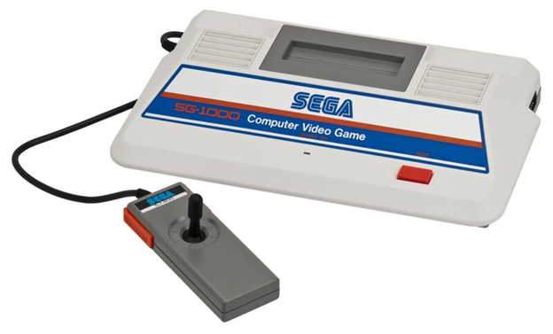
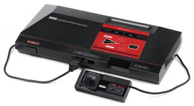

History of Sega
Founding and Early Years
- Founded in 1960 as a company that created coin-operated games.
- Became known for arcade games like Periscope in 1966 and later Space Harrier and OutRun.

Home Consoles
- Sega entered the North American home console market with the Sega Master System in 1986, followed by the Sega Genesis in 1988, which became a major competitor to Nintendo's systems in the U.S. and established franchises like Sonic the Hedgehog.
The Console Wars
- The 1990s saw intense competition, culminating in the release of the Sega Saturn in 1994 and the Dreamcast in 1998. However, the Saturn's rushed launch and the Dreamcast's inability to compete with the PlayStation led to financial difficulties.
Transition to Software
- In the early 2000s, Sega shifted focus from hardware to software development, creating games for various platforms and maintaining popular franchises like Sonic.
Current Status
- Sega continues to produce games and has a strong presence in the industry, known for both its legacy franchises and new titles.
Consoles
Sega SG-1000
| Year of Release | 1983 |
|---|---|
| Generation | 1st gen |
| Technical Specs. |
|
| Description | Sega's first home dedicated video game console. This console was sold as a cost-effective counterpart to the SC-3000 |
| Interesting Fact | On launch, this console had a hard-wired controller which could not be easily removed. Sega later launched an adapter cable that allowed the use of standard detachable controllers. |
|  | |
Sega SC-3000
| Year of Release | 1983 |
|---|---|
| Generation | 1st gen |
| Technical Specs. |
|
| Description | Sega's First computer. It's almost identical to the SC-1000 in terms of specs but has a keyboard which allowed support for hardware expansions |
| Interesting Fact | The SC-3000 sold ~120,000 units worldwide by the end of 1983 |
Sega Master System
| Year of Release | 1986 |
|---|---|
| Generation | 2nd gen |
| Technical Specs. |
|
| Description | Sega's first console to see widespread distribution outside of Japan. This console went head-to-head with the NES worldwide. |
| Interesting Fact | This was Sega's second most successful console and sold an estimated 20M units globally. |
|  | |
Sega Mega Drive (A.K.A. Sega Genesis)
| Year of Release | 1988 |
|---|---|
| Generation | 3rd gen |
| Technical Specs. |
|
| Description | Sega's fifth console. It's selling point being the 16-bit processor which allowed for a gaming experience that was typically only limited to arcades. |
| Interesting Fact | The controller had many updates and alternatives. The most notable one being the “Six Button Control Pad” |
Sega Saturn
| Year of Release | 1994 |
|---|---|
| Generation | 4th gen |
| Technical Specs. |
|
| Description | Sega's sixth console. This console runs 32-bit games from a CD as opposed to the cartridges the other consoles used. |
| Interesting Fact | Due to its complex hardware and its inability to meet consumer demands, the Saturn was one of Sega's biggest commercial failures in North America |
Sega Dreamcast
| Year of Release | 1998 |
|---|---|
| Generation | 5th gen |
| Technical Specs. |
|
| Description | Sega's seventh and last console. This console was discontinued in early 2001 due to the company's financial constraints. |
| Interesting Fact | This console was the last home console to use “bits” as a selling point, advertising this console as a “128-bit” machine. |

|
|